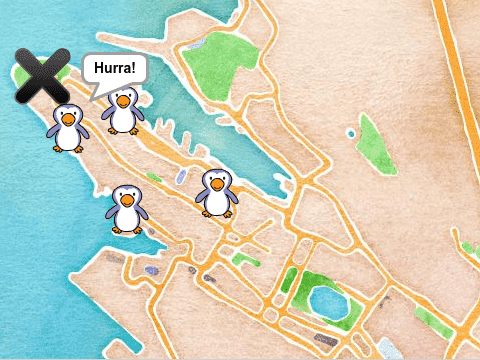

Velkommen til Scratch. Vi skal sammen lage et enkelt spill hvor pingvinene har
rømt fra akvariet i Bergen, og det er din jobb å hjelpe dem hjem igjen.

Velkommen til Scratch
Om du allerede kjenner Scratch og har en Scratchbruker kan du gå videre til
Steg 1.
Scratch er et programeringsspråk laget spesielt for
at det skal være raskt å komme i gang med, og for at man raskt skal kunne lage
sine egne spill og animasjoner. Scratch kjører i nettleseren og er helt gratis å
bruke. Før du begynner å programmere er det lurt å lage seg en Scratchbruker
fordi dette gjør det enklere å lagre spillene dine og dele dem med andre.
Lag en Scratchbruker
Videre gir vi deg en oppskrift på hvordan du kan lage et enkelt spill hvor
du skal hjelpe pingvinene å finne veien tilbake til akvariet i Bergen.
Steg 1: En pingvin på tur
Vi begynner med å se på hvordan vi kan lage en figur og få denne til å bevege seg.
Sjekkliste
Klikk på øverst i menyen, og klikk deretter på
kattefiguren for å slette denne.
Midt på skjermen ser du mange fargede klosser, for eksempel gå (10) steg. Disse er kommandoer vi kan gi til figurene våre. For å skrive et
program pusler vi sammen flere klosser ved å dra dem over til høyre delen av
skjermen.
når grønt flagg klikkes
for alltid
gå (10) steg
sprett tilbake ved kanten
slutt
Legg merke til at fargene på klossene samsvarer med kategoriene øverst på
siden. For eksempel finner du når grønt flagg klikkes i
Hendelser-kategorien.
Test prosjektet
Klikk på det grønne flagget øverst midt på skjermen for å prøve spillet ditt.
Du kan bruke den røde knappen ved siden av det grønne flagget om du ønsker at
pingvinen skal slutte å bevege seg. Etterhvert som du lager mer kode bør du
klikke på det grønne flagget for å se hva som skjer.
Lagre prosjektet
Du har nå laget et lite program! Scratch lagrer alt du gjør automatisk med jevne
mellomrom. Det kan likevel være lurt å lagre selv også innimellom.
Steg 2: På kryss og tvers
La oss se hvordan vi kan kontrollere hvordan pingvinen beveger seg.
Sjekkliste
Vi kan gjøre forandringer i koden vår. For eksempel sier tallet 10 i gå (10) steg-klossen noe om hvor fort pingvinen skal bevege seg. Prøv å
forandre dette tallet!
når grønt flagg klikkes
sett størrelse til (40) %
begrens rotasjon [vend sideveis v]
for alltid
gå (4) steg
sprett tilbake ved kanten
slutt
når grønt flagg klikkes
sett størrelse til (40) %
begrens rotasjon [vend sideveis v]
gå til [tilfeldig sted v]
pek i retning (tilfeldig tall fra (1) til (360))
for alltid
gå (4) steg
sprett tilbake ved kanten
slutt
For å lage pek i retning (tilfeldig tall fra (1) til (360)) må du
først legge til pek i retning (90 v)-klossen og deretter pusle
tilfeldig tall fra (1) til (10)-klossen inn i denne og forandre 10
til 360.
Test prosjektet
Klikk på det grønne flagget.
Steg 3: Bergen
Pingvinen har rømt fra akvariet i Bergen, så da burde den jo springe rundt i Bergens gater.
Vi skal prøve å kontrollere pingvinen slik at vi kan hjelpe den tilbake til
Akvariet.
Sjekkliste
I dette spillet skal vi kontrollere pingvinen ved å klikke på kartet. Pingvinen
skal da snu seg vekk fra der vi holder musepekeren før den går videre.
når scenen klikkes :: hat events
send melding [snu retning v]
trommeslag (1 v) som varer (0.25) takter
En slik melding er en beskjed programmet ditt sender til alle figurene. Du
vil ikke se disse meldingene, men figurene dine kan reagere på dem. Her vil
vi fortelle pingvinen at den skal snu når vi klikker på kartet (scenen).
når jeg mottar [snu retning v]
pek mot [musepeker v]
vend venstre (180) grader
Test prosjektet
Klikk på det grønne flagget.
Steg 5: Pingvinen kommer hjem!
Vi skal til slutt se hvordan pingvinen kan oppdage at den har kommet hjem!
Sjekkliste
når grønt flagg klikkes
sett størrelse til (40) %
begrens rotasjon [vend sideveis v]
gå til [tilfeldig sted v]
pek i retning (tilfeldig tall fra (1) til (360))
for alltid
gå (4) steg
sprett tilbake ved kanten
hvis <berører [Akvariet v] ?>
si [Hurra!] i (7) sekunder
gå til [tilfeldig sted v]
slutt
slutt
Test prosjektet
Klikk på det grønne flagget.
Prøv selv
Vi har nå laget et lite spill sammen, men prøv gjerne å utvikle det videre. Her
er noen ideer:
Forbedre denne siden
Funnet en feil? Kunne noe vært bedre? Hvis ja, vennligst gi oss tilbakemelding ved å lage en sak på Github eller fiks feilen selv om du kan. Vi er takknemlige for enhver tilbakemelding!

 øverst i menyen, og klikk deretter på
kattefiguren for å slette denne.
øverst i menyen, og klikk deretter på
kattefiguren for å slette denne.